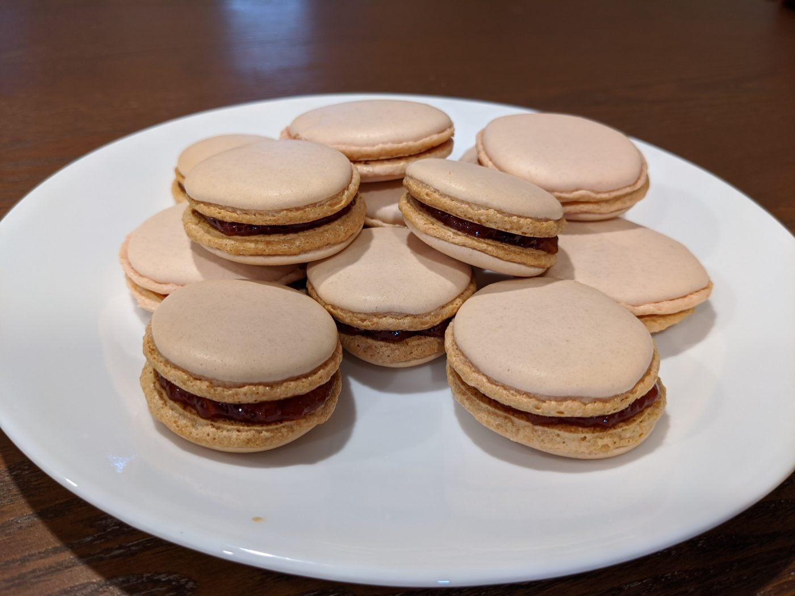

Strawberry Macarons
Ingredients
- 1/3 cup auafaba
I reduced the water from a can of chickpeas by half, worked great. However, I’ve seen videos online where they just use the aquafaba directly. YMMV. - 1/4 tsp cream of tartar
- 66 g sugar
You might want something smaller-grained than the typical super-course-grained cane sugar - 110 g powdered sugar
- 110 g almond flour
- 1 cup strawberry jam
- 2 drops red food coloring, optional
Instructions
-
Preheat the oven to 310 degrees.
-
In a stand mixer, add your aquafaba and cream of tartar.
-
Mix on low for 1 minute.
-
Mix on medium for 2 minutes.
-
Raise speed to high and start adding the sugar slowly over a few minutes.
-
Keep mixing until you have stiff peaks. A few minutes.
-
Sift together the powdered sugar and almond flour.
Sifting is considered to be important to prevent clumps in our batter. -
Fold the dry ingredients into your whipped aquafaba with a rubber spatula. A good strategy would be to use consistent “J” motions. It’s not that delicate of a mixture, but don’t go too crazy. It can take some time to get everything absorbed.
The tricky part here is to get the batter to the right consistency. You want to keep mixing until you can take a big scoop, hang your spatula, and see it flow off the spatula slowly and relatively smoothly, with the drippings blending into the batter in the bowl. It won’t be like liquid – it’ll still sort of blob off – the main thing is that you don’t want it to be stiff. We want these things to spread just a little in the next step.
(If you’d like, you can add some red food coloring now)
-
Transfer your mixture to a piping bag. Pipe into ~24 circles on to a baking sheet lined with either a silicon baking mat or parchment paper.
The mixture should be such that you can pipe it into a circle by just making one “plop”. It should spread just a little bit, enough that it smooths itself out.
-
After piping, pick up your sheet and drop it on the table a few times. This will help reduce air bubbles.
-
Then, take a toothpick and pop any bubbles you see. Don’t worry, the mixture with smooth itself out after you pop them.
Let rest 15 minutes.
Until the shells feel dry to the touch.
- Bake for 20 minutes total, rotating the sheet every 5 minutes.
- At this point, you should have a set of wonderful shells. Let them cool completely.
- You can do many, many different kinds of fillings. A simple one is just strawberry jam. Put the jam into a piping bag, pipe onto a cookie, and sandwich another on top.